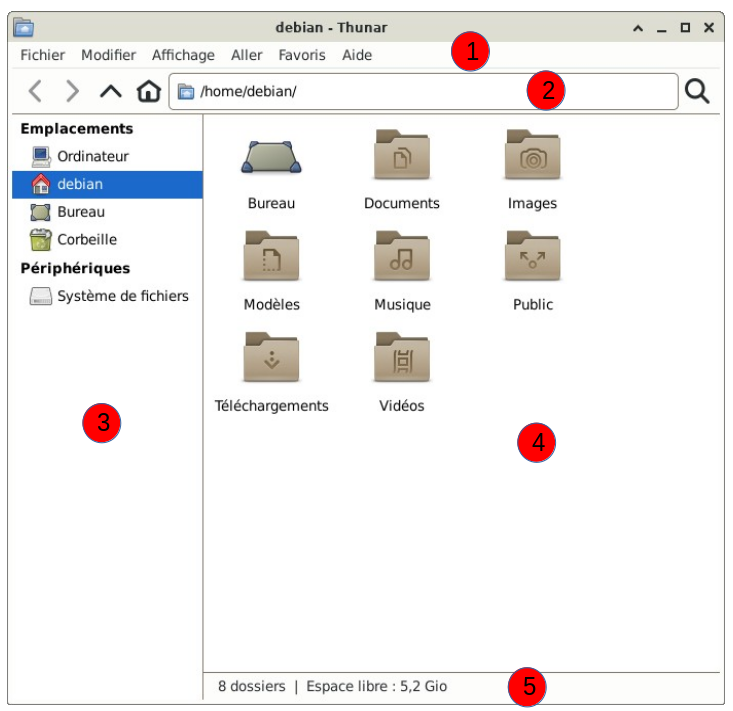
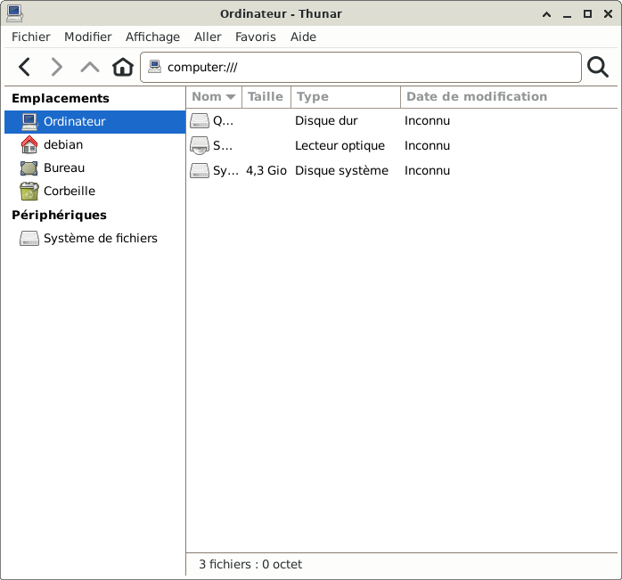
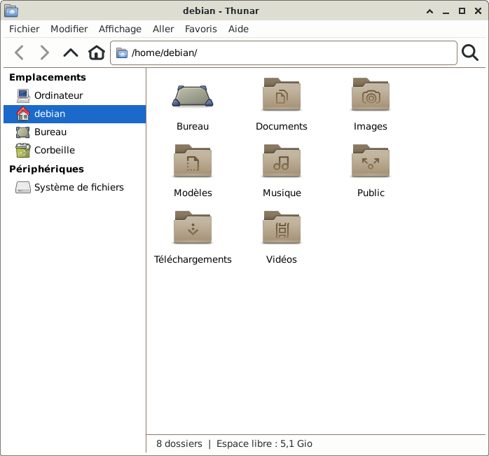
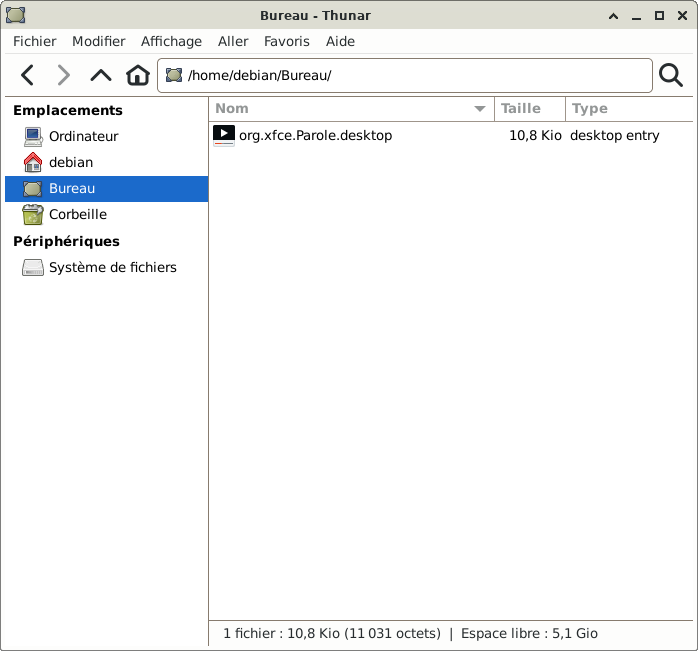
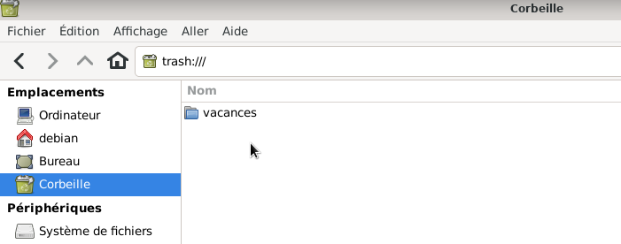
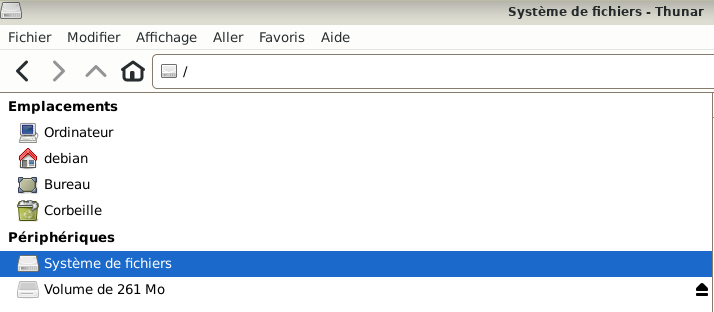

&
Le gestionnaire de fichiers Thunar: Le site Xfce.
Les documents, la musique, les photos et les films sont des fichiers terminant par un « .pdf », « .jpg », « .mp3 »...
Ces fichiers sont organisés dans des dossiers : nommés par exemple Vidéos.
Pour les retrouver, il faut utiliser Thunar, le gestionnaire de fichiers.
Thunar est un gestionnaire de fichiers rapide et facile d’utilisation pour l’environnement de bureau Xfce.
Ce mémo ne couvre pas toutes les fonctionnalitées de Thunar, seulement quelques exemples.

Le gestionnaire de fichiers Thunar s'ouvre.

Quelques manipulations dans le gestionnaire de fichier Thunar
Sous Emplacements : Simple clic > Ordinateur

Dans la zone principale se trouve le disque dur du PC, le lecteur optique (lecteur CD/DVD)...

Dans la zone principale se trouvent les dossiers de l'utilisateur : Bureau, Documents, Images, Modèles...

Dans la zone principale se trouvent les icônes (raccourcis) du bureau qui ont été ajoutées par l'utilisateur.
Ici, le raccourci de l'application « Parole » a été ajouté sur le bureau.

Dans la zone principale se trouve tout ce qui a été déplacé dans la corbeille.
Ici, le dossier « vacances » a été déplacé dans la corbeille.



Informations sur le logiciel libre et Merci.
Marques déposées :
Ce site ne fait pas partie de Debian, n'est pas produit par le projet
Debian, ni approuvé par le projet Debian.
Ce site n'est pas affilié à Debian. Debian est une marque déposée appartenant
à Software in the Public Interest, Inc.
Contribuer :
Ce site ne fait pas partie de XFCE, n'est pas produit par le projet
XFCE, ni approuvé par le projet XFCE.
Ce site n'est pas affilié à XFCE.
Ce site est juste réalisé par un passionné.